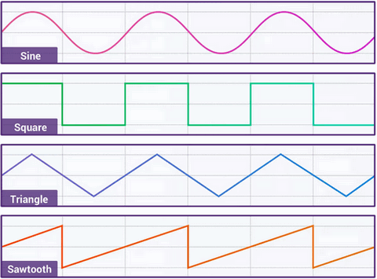

AudioBuffer API：
是表示存在存储器里的短音频资产，利用AudioContext.decodeAudioData()方法从音频文件构建，或者利用
AudioContext.createBuffer()构建于原数据。一旦将其放入AudioBuffer，可以传递到一个
AudioBufferSourceNode进行播放。
缓存区（buffer）包含以下数据：
不间断的IEEE75432位线性PCM，从-1到1的范围额定，就是说，32位的浮点缓存区的每个样本在-1.0到1.0之间。如果AudioBuffer有不同的频道，他们通常被曝存在独立的缓存区。
本质并不是从键盘获取，而是通过键盘获取到我们设定的频率值，然后通过程序创建一段音频。如下实例：该例子中可以按键盘上中间的一排按键（A到K）来发出不同的声音。
在以下输入框中输入不同的数值以发出不同的声音。